Serials-Batches-Location plugin
Serials-Batches-Location plugin
|
|
Serials-Batches-Location plugin - Manual - Shop - Licence : Once-off - Added the Serials and Batches to document layout files and 2 reports (i.e. On hand and Stock movement report). Translations : Translations outstanding |

The "Serials-Batches-Location" plugin in osFinancials appears to be a tool designed to manage and track inventory, specifically serial numbers, batches, and locations. Here's a summary of the key features and steps to activate and use this plugin:
Features:
- Serial : Allows for tracking individual serial numbers, suitable for items like phones or computers. You can track manufacturing dates or production dates and sell by dates or expiry dates.
- Batch/Location : Enter batch numbers and quantities and have the possibility to move between locations. You can track manufacturing dates or production dates and sell by dates or expiry dates.
- Location : Just location management. Focuses on managing item locations in your shop, store, or warehouse. You can add locations (e.g., bin, aisle number, row) where you store stock items if needed.
Activate in Stock Items:
- In the Stock items section, a new tab called "Location-Serials-Batches" is added for each stock item.
- By default, this feature is set to "Off" for all stock items.
- You can activate it for specific items and choose one of the three tracking types: Serial, Batch/Location, or Location.
Processing Documents:
- For purchases, you can enter new batches or serials after selecting the product. The system automatically updates the quantities when you enter serial numbers. Similar functionality is available for supplier returns.
- For sales invoices, you can select from the list of locations, serials, and batches of the selected product. Similar functionality is available for credit notes.
Printing Documents:
- Serial numbers or batch numbers will appear on delivery notes, invoices, credit notes, delivery notes, purchases, and supplier returns.
Search for Serial Numbers:
- You can search for serial numbers using the Search function on the Default ribbon.
- Enter the serial number or other criteria in the "Search for" field.
- You can search for documents or stock items matching your criteria.
Reports:
- There are several reports available under Reports → Plugins → Locations-Batches-Serials, including:
- On hand: Lists serials or batches available to sell to customers.
- Stock movement: Lists serials or batches purchased from suppliers and sold to customers.
- Bought from supplier: Lists serials or batches purchased from suppliers.
- Sold to customer: Lists serials or batches sold to customers.
- Outdated batch: Lists serials or batches that are still on hand but past the maximum sales date.
This plugin seems to provide comprehensive inventory tracking and management capabilities within the osFinancials or TurboCASH software.
Introduction
The "Serials-Batches-Location" plugin allows you to purchase and sell products (stock items) and keep track of serial numbers, batches and locations.
In addition to serials, batches and locations, you may keep track of a manufacturing and sell by date.
You can select 3 different types of tracking.
- Serial : Allows for tracking individual serial numbers, suitable for items like phones or computers. You can track manufacturing dates or production dates and sell by dates or expiry dates.
- Batch/Location : Enter batch numbers and quantities and have the possibility to move between locations. You can track manufacturing dates or production dates and sell by dates or expiry dates.
- Location : Just location management. Focuses on managing item locations in your shop, store, or warehouse. You can add locations (e.g., bin, aisle number, row) where you store stock items if needed.
Activation
In osFinancials / TurboCASH:
Go to the Setup ribbon tab, select Plugins → Stock plugins → Location-Serials-Batches. If this plugin is not listed under Plugins → Stock plugins, activate it via Tools → Activate plugins.
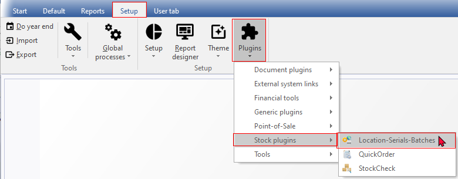
You will see the setup screen for the plugin : Set Activate to on and press Save.
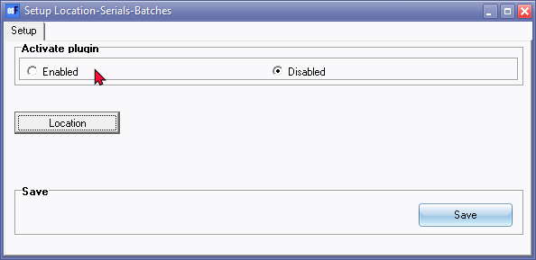
You may add Locations (Bin, Isle number row) as the place where you keep the stock items in your shop, store, warehouse, if necessary.
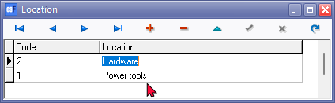
If locations were added, remember to click on the Save button.
Close the Set of Books or restart osFinancials or TurboCASH!
Activate in Stock items - Location-Batches-Serial tab
Go to Stock items (on the Default ribbon tab). If you select any stock item, a new tab "Location-Serials-Batches" is added.
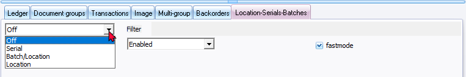
By default, the "Location-Serials-Batches" is set to Off (not activated) for all stock items.
You can select 3 different types of tracking.
- Serial : Allows for tracking individual serial numbers, suitable for items like phones or computers. You can track manufacturing dates or production dates and sell by dates or expiry dates.
- Batch/Location : Enter batch numbers and quantities and have the possibility to move between locations. You can track manufacturing dates or production dates and sell by dates or expiry dates.
- Location : Just location management. Focuses on managing item locations in your shop, store, or warehouse. You can add locations (e.g., bin, aisle number, row) where you store stock items if needed.
Press Add to add a new record to enter products you already have like a start position. Do not enter products you still are going to purchase and enter in documents.
Filter - Once purchase documents and sales documents have been processed, the options is as follows:
- All: This will list all the available Serials, Batches/Locations or Locations which is Enabled (available for selling) as well as Disabled (already sold).
- Enabled: This will list the available Serials, Batches/Locations or Locations which is available for selling.This would usually be the processed purchase documents.
- Disabled: This will list the Serials, Batches/Locations or Locations which is already sold. This would usually be the processed sales documents. This would be listed in a RED font or row background colour.
Serial
Serial option - Fast mode on (default view)
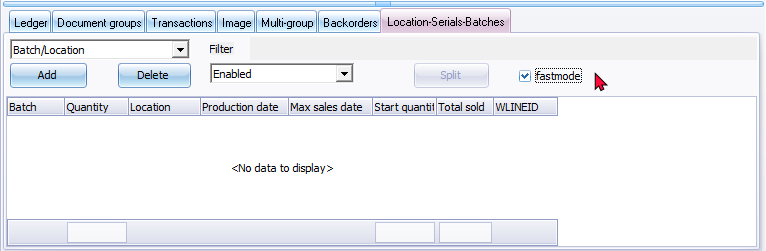
Serial option - Fast mode off
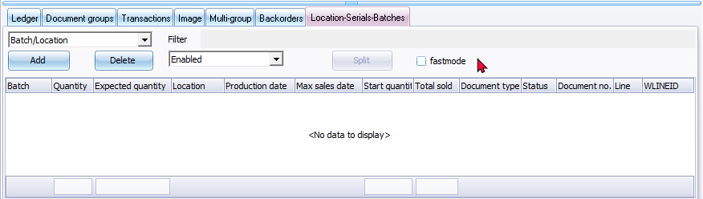
Serial option - Add
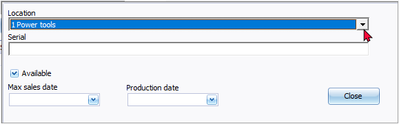
Batch / location
Also you can move and correct quantities here, if the need arises.
Batch / location option - Fast mode on (default view)
Batch / location - Fast mode off
Batch / location - Add
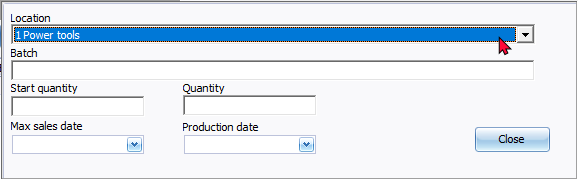
The quantities adjusted will reflect on then quantity on hand for the stock item after saving the stock item.
Location
Location option - Fast mode on (default view)
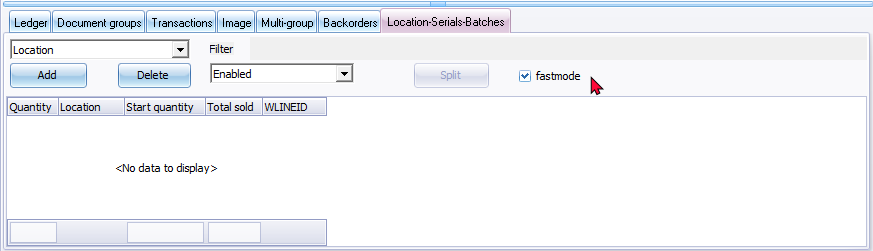
Location - Fast mode off
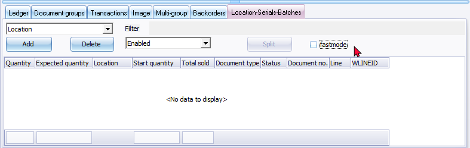
Location - Add
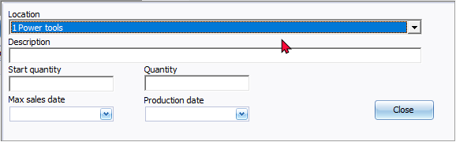
Processing documents
Purchases
If you do a purchase you can enter new batches or serials after selecting the product.
The number of items (products) with serial numbers will automatically update the quantities in the document lines field.
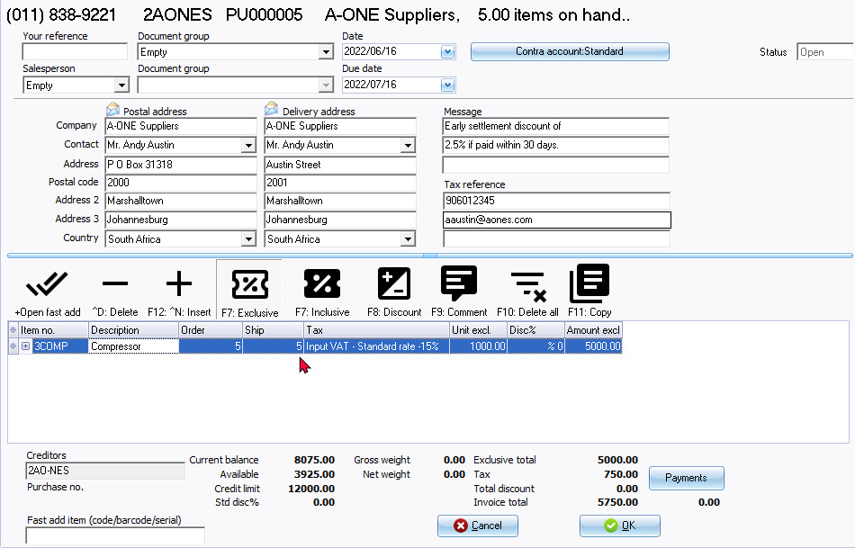
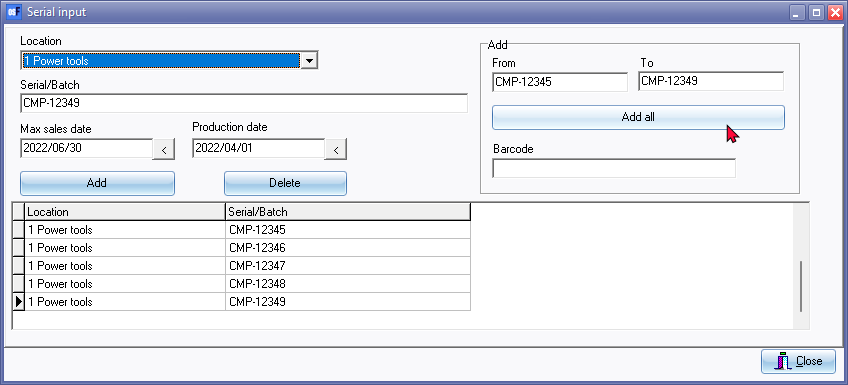
If you enter serial numbers in the From and To fields, and you click on the Add all button, a similar confirmation message will be displayed.
"Continue action Add 5 Serial ?"
A similar lookup screen will be displayed for serial input when processing supplier returns.
Sales
At sales you can select from the list of locations serials and batches of the product selected.
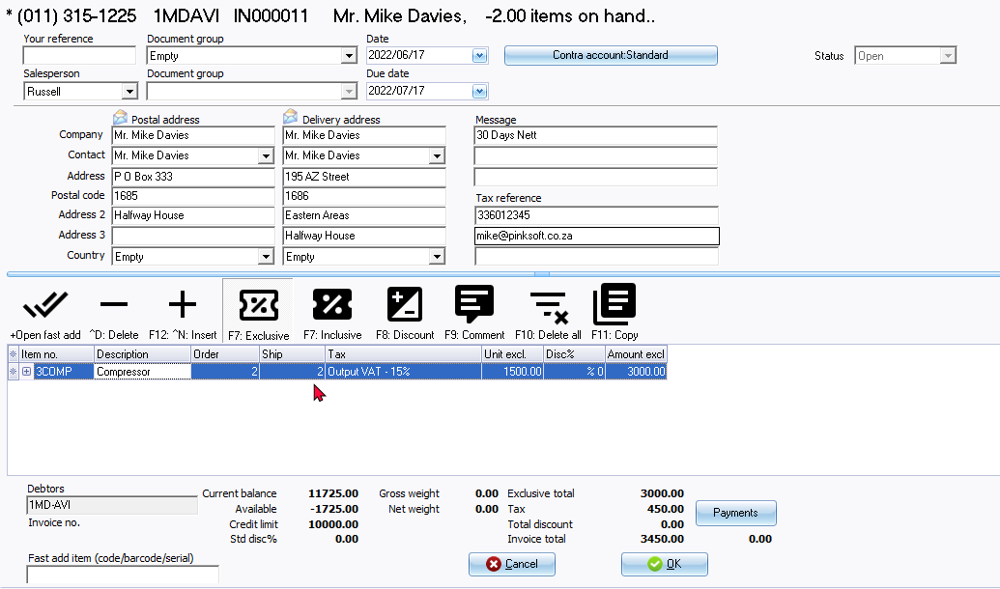
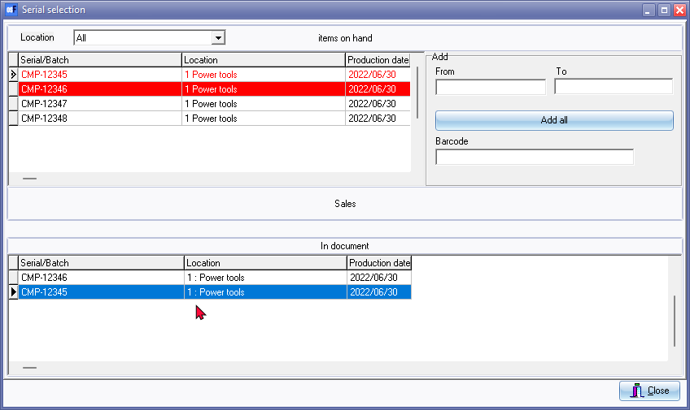
A similar lookup screen will be displayed for serial input when processing credit notes.
Printing documents
The serial numbers will print on Delivery notes, Invoices, Credit notes, Delivery notes, Purchases and Supplier returns.

Search for Serial numbers
On the Default ribbon, select Search.
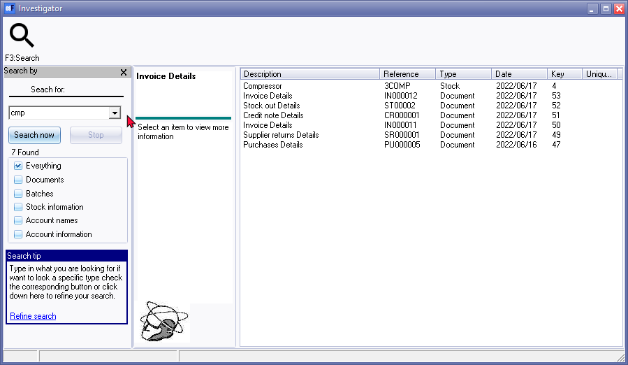
Enter the serial number, etc. in the Search for field. In this example, only the first (prefix) of the serial numbers, is entered in the "Search for:" field.
If a document number is prefixed with "ST" followed by 5 numeric digits, as in this example, "ST00002", it is a posted document ("Stock" document type) generated when you save a stock item as an "Adjustment" after a serial, batch or location quantities is changed.
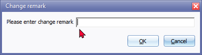
The description you have entered in the "Change remark" screen will be displayed in the "Description" column of the Document groups tab and in the "Reference" column of the Transactions tab.
Type
- Document - The document details will list all documents matching your search criteria. If you double-click on it (or right-click and select Show details option on the context menu), you may print the selected document.
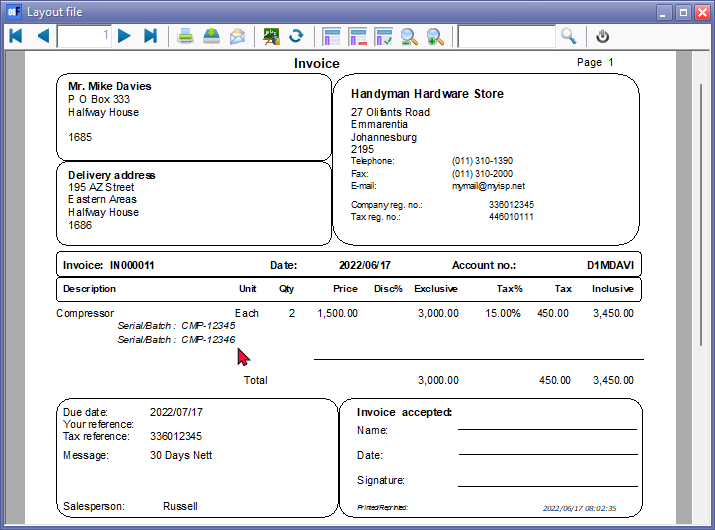
- Stock - The Stock items matching your search criteria will be listed. If you double-click on it (or right-click and select Show details option on the context menu), the selected Stock item form will be opened.
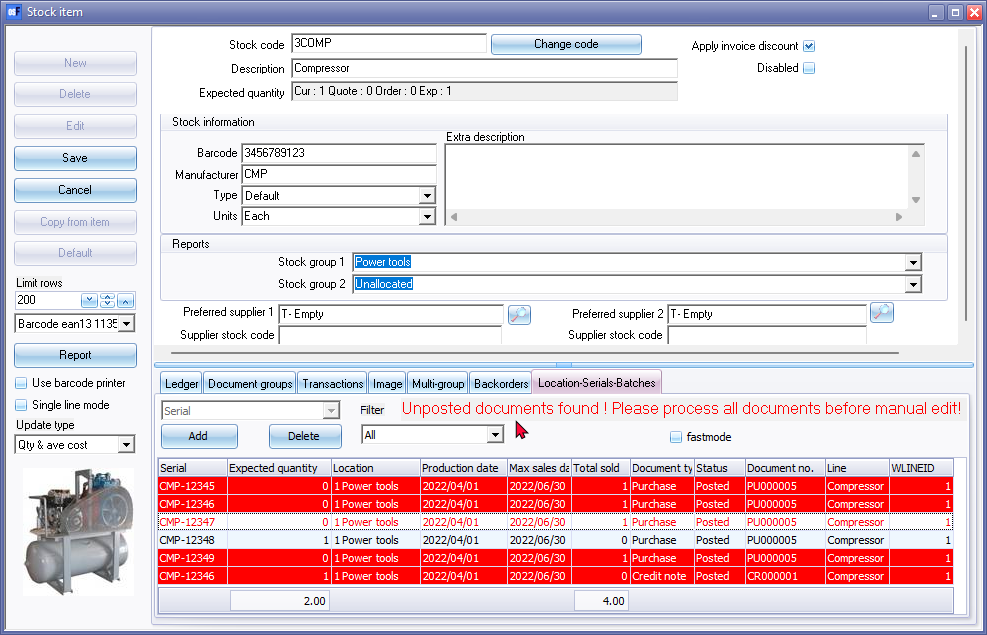
By default, only the "Enabled" items will be listed on the "Location-Serials-Batches" tab. You may click on the "All" filter option to view all items.
By default, only the "fastmode" is selected. To view more details, remove the tick in the "fastmode" tick box.
If any documents is not posted, these will be listed in the "Search - Investigator" search results.
Reports
On the Reports ribbon, select Reports → Plugins → Locations-Batches-Serials.
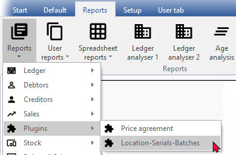
On hand report
The "Location-Serials-Batches - On hand" report lists those serials or batches which is still available to sell to debtors (customers / clients)..
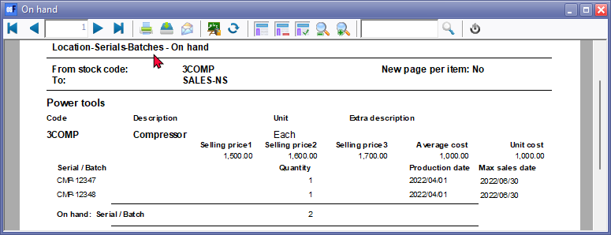
Stock movement report
The "Location-Serials-Batches - Stock Movement" report is a valuable tool for tracking the movement of serials or batches of products in your inventory.
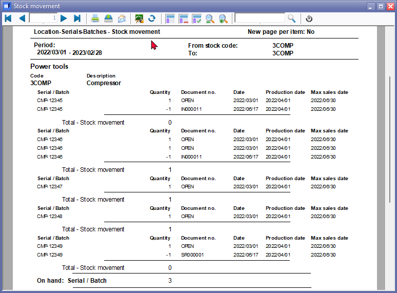
Specifically, this report lists the serials or batches that have been purchased from creditors (suppliers or vendors) and subsequently sold to debtors (customers or clients). Here's how this report can be helpful:
- Inventory Tracking: The report provides a comprehensive overview of the movement of specific products, including their serials or batches. It allows you to see which items have been acquired from suppliers and then sold to customers.
- Transaction History: You can view the complete transaction history for each product, including purchase dates, supplier information, sale dates, and customer details.
- Stock Accuracy: By tracking the flow of products from suppliers to customers, you can ensure the accuracy of your inventory records. This helps prevent overstocking or under-stocking of items.
- Quality Control: The report helps in quality control by allowing you to trace products back to their source. If there are issues with product quality or recalls, you can quickly identify affected items.
- Order Fulfilment: It aids in order fulfilment by verifying that you have the necessary stock on hand to meet customer demands.
- Supplier Performance: You can assess the performance of your suppliers by tracking the movement of their products. This information can be useful for supplier evaluations and negotiations.
- Customer Service: When customers inquire about specific products or orders, you can use the report to provide accurate and detailed information about the products they purchased.
- Returns and Exchanges: If customers need to return or exchange products, you can use the report to identify the exact serials or batches that were sold to them, making the process more efficient.
- Accounting and Financial Reporting: The report provides data that can be useful for accounting purposes, including tracking the cost of goods sold (COGS) and calculating profit margins.
Overall, the "Location-Serials-Batches - Stock Movement" report enhances your ability to manage inventory, track product history, and provide better customer service by offering detailed insights into the movement of products from suppliers to customers.
Warranty and Guarantee Management
the "Serial Tracking" feature is essential for keeping track of individual serial numbers for items like phones or computers. Here's why it's important and how it can support warranty and guarantee management:
Purchase and Supplier Returns:
- When you purchase products from suppliers, each item can have a unique serial number associated with it.
- Serial tracking allows you to record which specific items you received from suppliers and when.
- If you need to return products to the supplier for any reason, you can accurately identify and track the items using their serial numbers.
Sales and Customer Returns:
- When selling products to customers, you can associate a serial number with each item sold.
- This helps you keep a record of which product was sold to which customer and when.
- If customers need to return items due to warranty claims or defects, you can easily identify the specific product using its serial number.
Warranty and Guarantee Management:
- Serial tracking is instrumental in managing warranties and guarantees effectively.
- You can associate warranty or guarantee information with each product based on its serial number.
- This includes details such as the warranty period, terms and conditions, and contact information for warranty support.
- When customers request warranty service or have issues with a product, you can quickly access the warranty details associated with the serial number and provide the necessary support.
By using the "Serial Tracking" feature, businesses can maintain a detailed and organized record of individual products throughout their life-cycle, from purchase to sale and potential returns. This not only enhances inventory management but also streamlines warranty and guarantee processes, improving customer satisfaction and operational efficiency.
Bought from supplier
The "Location-Serials-Batches - Batch bought from supplier" report lists those serials or batches which is purchased from creditors (suppliers / vendors).
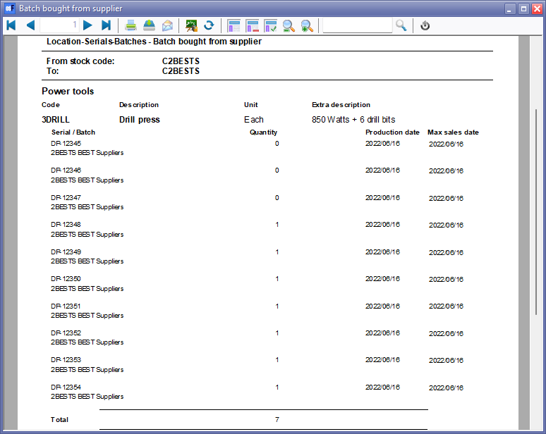
The "Location-Serials-Batches - Batch Bought from Supplier" report is a specific type of inventory report that lists the serials or batches of products that have been purchased from creditors (suppliers or vendors). This report serves several important purposes:
- Purchase Tracking: It provides a detailed record of the batches or serials acquired from suppliers. This information helps in tracking the products you have received from different suppliers.
- Supplier Relations: By maintaining a record of batches bought from suppliers, you can assess the performance and reliability of your suppliers. This data can be useful in supplier negotiations and evaluations.
- Quality Control: The report helps in monitoring the quality of products received from suppliers. If there are issues with a specific batch or serial, you can identify it through this report.
- Inventory Accuracy: It contributes to the accuracy of your inventory records. By knowing which batches were received from suppliers, you can manage your stock levels effectively.
- Accounting and Cost Analysis: The report assists in cost analysis and financial reporting. You can calculate the cost of goods sold (COGS) by referencing the batches bought from suppliers, which is essential for accurate financial statements.
- Product Traceability: If there are recalls or safety concerns related to specific batches of products, you can use this report to trace back to the source and identify affected items.
- Reorder Management: It helps in identifying when specific batches need to be reordered from suppliers based on sales trends and inventory levels.
- Documentation: When dealing with regulatory requirements or audits, having a clear record of batches bought from suppliers is essential for compliance and documentation purposes.
In summary, the "Location-Serials-Batches - Batch Bought from Supplier" report is a valuable tool for businesses that rely on batch or serial tracking to manage their inventory effectively, assess supplier performance, and maintain accurate financial records. It provides transparency and traceability in your supply chain processes.
Sold to customer
The "Location-Serials-Batches - Batch sold to customer" report lists those serials or batches which is sold to debtors (customers / clients).
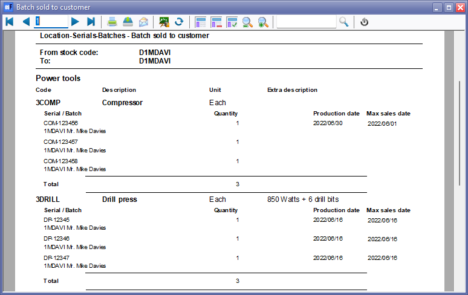
The "Location-Serials-Batches - Batch Sold to Customer" report is a valuable inventory management tool that lists the serials or batches of products that have been sold to debtors, including customers or clients. This report offers several important benefits:
- Sales Tracking: The report provides a comprehensive record of the batches or serials that have been sold to customers. This information helps you track the sales history of specific products.
- Customer Service: When customers have inquiries about their purchased items, returns, or warranty claims, this report enables you to quickly and accurately identify the exact serials or batches associated with their transactions. It enhances customer service by providing detailed information.
- Inventory Accuracy: It contributes to maintaining accurate inventory records. By knowing which batches have been sold, you can keep track of your remaining stock and plan for restocking when necessary.
- Quality Control: The report helps in quality control by allowing you to trace products back to specific batches. If there are quality issues or recalls, you can identify affected items through this report.
- Returns and Exchanges: When customers need to return or exchange products, you can use the report to verify which serials or batches were sold to them, streamlining the return process.
- Warranty and Support: For products with warranties or guarantees, you can use the report to confirm warranty coverage for specific items based on their serials or batches.
- Accounting and Financial Reporting: The report is useful for accounting purposes, including tracking the revenue generated from the sale of specific batches and calculating profit margins.
- Product Traceability: If there are regulatory compliance requirements or safety concerns related to specific batches, this report helps you trace the products back to their source and identify affected items.
- Marketing and Sales Analysis: By understanding which batches or serials are selling well, you can make informed decisions regarding marketing strategies and product promotions.
Overall, the "Location-Serials-Batches - Batch Sold to Customer" report enhances your ability to manage inventory, provide excellent customer service, ensure product quality, and meet regulatory requirements. It offers transparency and traceability in your sales processes and supports various aspects of your business operations.
Outdated batch
The "Location-Serials-Batches - Outdated batch" report lists only those serials or batches which is still on hand, but which is past the maximum sales date.
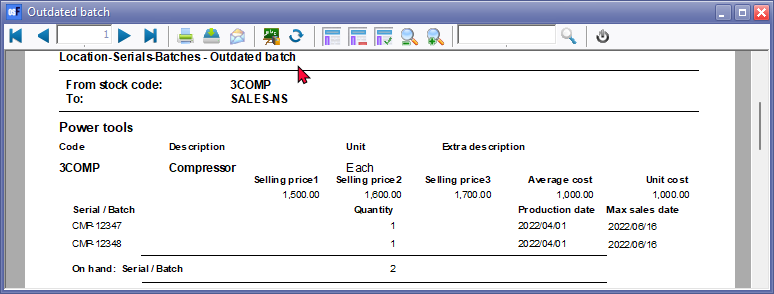
The "Location-Serials-Batches - Outdated Batch" report plays a crucial role in helping businesses manage expired items effectively. Here's how this report can be beneficial in managing expired items:
- Identifying Expired Items:
- The report identifies and lists all serials or batches that have passed their maximum sales date.
- It provides a clear and concise overview of which products are no longer fit for sale due to expiration.
- Preventing Sale of Expired Items:
- By having a list of expired items at hand, businesses can prevent the accidental sale of products that are past their sell-by or expiry dates.
- This helps maintain product quality and ensures that customers receive fresh and safe products.
- Reducing Wastage:
- Businesses can take proactive measures to address expired items, such as removing them from shelves or disposing of them appropriately.
- This reduces the risk of keeping expired products in inventory, which can lead to financial losses.
- Inventory Management:
- The report aids in efficient inventory management by highlighting items that need attention.
- It allows businesses to make informed decisions regarding restocking, discounts, or disposal of expired items.
- Compliance and Liability:
- For items with legal or regulatory requirements, like food or pharmaceuticals, tracking expiration dates is essential to comply with safety standards.
- Having an accurate record of expired items can also protect businesses from liability issues.
- Customer Satisfaction:
- Avoiding the sale of expired items enhances customer satisfaction and trust in your business.
- It demonstrates your commitment to providing fresh and safe products to customers.
- Cost Savings:
- Efficiently managing expired items reduces financial losses associated with wastage.
- Businesses can potentially plan better for purchasing and stocking items to minimize overstocking of perishable goods.
In summary, the "Location-Serials-Batches - Outdated Batch" report is a valuable tool for businesses to proactively manage and mitigate the risks associated with expired products. It supports compliance, reduces wastage, and ensures that customers receive quality goods, ultimately contributing to the overall success of the business.
Common practice - Specific steps to dispose of these items and to returns to suppliers
The specific steps for disposing of or returning expired items identified on the "Location-Serials-Batches - Outdated Batch" report may vary depending on your business processes, the type of products involved, and any applicable regulations or agreements with suppliers. However, here are some common practices that you can consider when dealing with expired items:
For Disposal:
- Separation: Physically separate expired items from non-expired inventory to avoid accidental sale.
- Record: Document the details of the expired items, including their serial or batch numbers and quantities.
- Dispose Properly: Dispose of the expired items according to local regulations and environmental guidelines. This may involve recycling, donating non-perishable items if possible, or disposing of perishables in an environmentally responsible manner.
- Adjust Inventory: Update your inventory management system to reflect the disposal of expired items. This ensures accurate tracking of your remaining stock.
- Review and Adjust: Analyse why these items expired. Adjust your inventory management practices or purchasing strategies to minimize future wastage.
For Returns to Suppliers:
- Verification: Ensure that the items marked as expired are indeed within the warranty or return period specified by the supplier. Check your purchase records and supplier agreements.
- Contact Supplier: Reach out to the supplier or vendor from whom you purchased the items. Inform them of the expired items and request return instructions.
- Return Authorization: Obtain a return authorization or an RMA (Return Merchandise Authorization) from the supplier if required.
- Packaging: Properly package the expired items for return. Include any required documentation, such as the RMA, along with a clear explanation of why the items are being returned.
- Shipping: Arrange for the return shipment, following the supplier's preferred shipping method or instructions.
- Tracking: Keep a record of the return shipment's tracking information for reference.
- Credit or Replacement: Once the supplier receives and processes the returned items, they may offer a credit or replacement, depending on their policies and the condition of the items.
- Inventory Update: Update your inventory management system to reflect the returned items and any credit received.
It's essential to have clear internal procedures for handling expired items and returns to suppliers. Communication with suppliers is key, as their specific return policies and procedures may vary. Additionally, maintaining accurate records of these transactions is crucial for accountability and compliance.
Importance to check the expiry dates
Checking the expiry dates of products when receiving them from suppliers is a crucial part of effective inventory management, especially if your business deals with perishable goods or products with limited shelf life. Here are some key reasons why it's essential:
- Quality Assurance: Verifying expiry dates ensures that the products you receive are fresh and safe for your customers. It helps maintain the quality and safety of the items you sell.
- Minimize Waste: By being aware of expiry dates, you can avoid receiving products that are close to or have already passed their expiration date. This reduces the risk of inventory becoming obsolete or being wasted.
- Compliance: Depending on your industry, there may be regulatory requirements related to handling and selling products within their specified shelf life. Compliance with these regulations is critical to avoid legal issues.
- Customer Satisfaction: Customers expect to purchase products with reasonable shelf life. Selling expired items can lead to dissatisfied customers, returns, and damage to your business's reputation.
- Inventory Turnover: Understanding expiry dates helps you manage your inventory turnover effectively. You can prioritize the sale of items that are closer to expiration to minimize the risk of unsold stock.
Managing Expiry Dates
To effectively manage expiry dates when receiving products from suppliers, consider the following practices:
- Inspect Shipments: Inspect incoming shipments carefully and check the expiry dates on each product. Ensure that the products received have sufficient shelf life for your expected sales.
- First-In-First-Out (FIFO): Implement a FIFO inventory system, where you sell the oldest items first. This ensures that products with shorter shelf lives are sold before newer ones.
- Communication with Suppliers: Maintain open communication with your suppliers. Make them aware of your requirements regarding product shelf life and expectations for fresh inventory.
- Storage Practices: Store products with shorter shelf lives in a way that ensures they are used or sold before items with longer shelf lives.
- Inventory Tracking: Use an inventory management system that tracks expiry dates and provides alerts or reports on items approaching their expiry.
- Regular Audits: Conduct regular audits of your inventory to identify and address any items nearing expiration.
- Training: Train your staff to be vigilant about checking expiry dates during the receiving process and when restocking shelves.
By incorporating these practices into your inventory management processes, you can minimize waste, provide high-quality products to your customers, and maintain efficient inventory turnover. This, in turn, contributes to the success and reputation of your business.